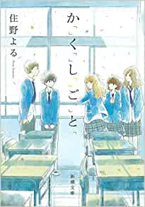

みんなには隠している、少しだけ特別な力を持った高校生5人。別に何の役にも立たないけれど、そのせいで、クラスメイトのあの子のことが気になって仕方ない――。彼女がシャンプーを変えたのはなぜ？ 彼が持っていた“恋の鈴”は誰のもの？ それぞれの「かくしごと」が照らし出す、お互いへのもどかしい想い。甘酸っぱくも爽やかな男女5人の日常を鮮やかに切り取った、共感必至の青春小説。

か「」く「」し「」ご「」と「